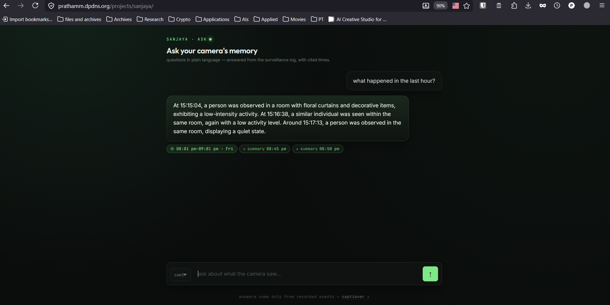
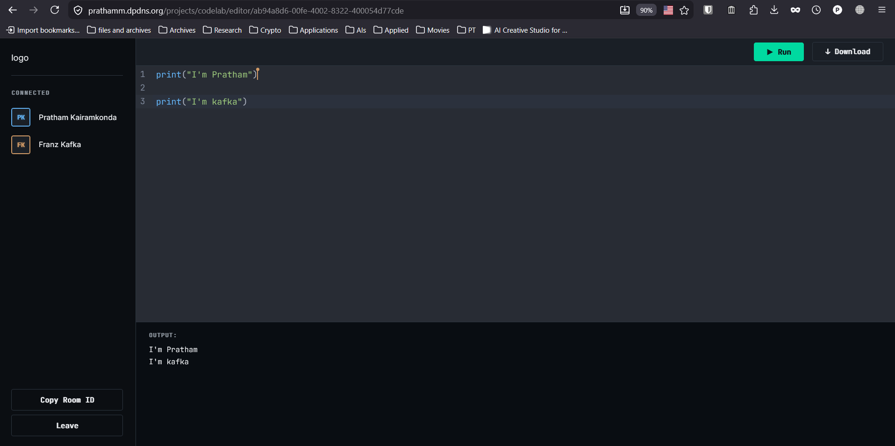
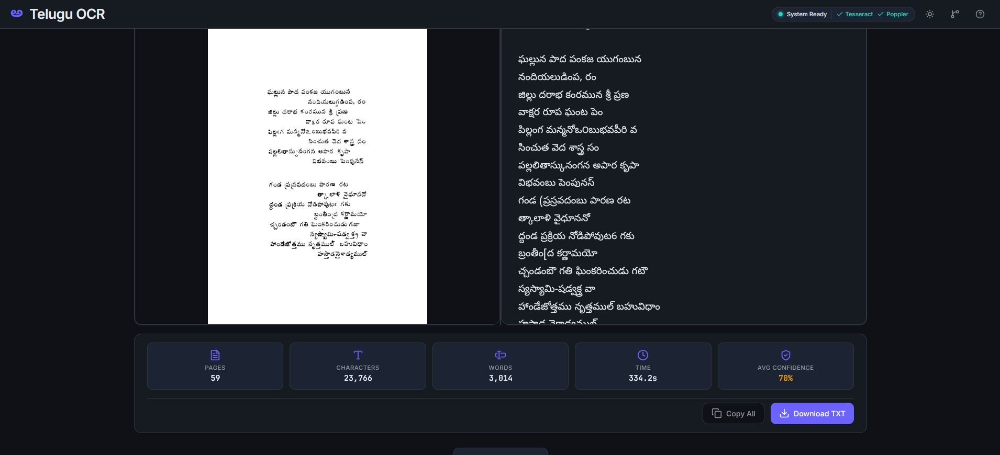
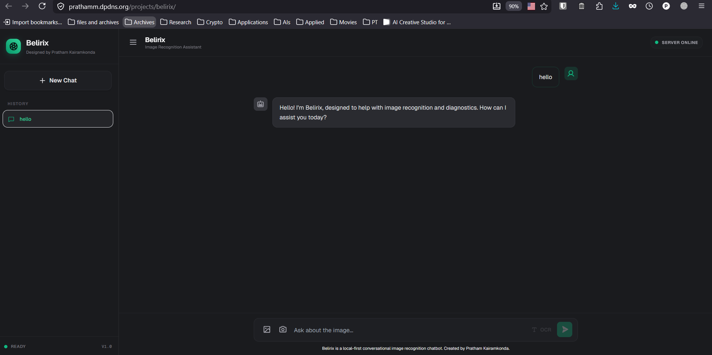

From local LLM pipelines and backend APIs to production-grade enterprise systems – I build things end-to-end, across the stack, and I've been doing that long enough to know what actually works.
I build complete systems – not just pieces of them. Backend designed, database optimized, APIs shipped, AI pipeline running, deployed end-to-end. That's the difference between a prototype and something that actually works in production.
My work spans local LLM inference, RAG pipelines, and multi-agent systems as much as it covers enterprise Django/SQL backends and full-stack web. I've shipped inside a live pharma-grade LIMS used by Cipla, Lupin, Dr. Reddy's, and Biocon — and I build offline AI tools on my own hardware for the fun of pushing what's possible without a GPU farm.
This whole portfolio and every live project are self-hosted on a single old laptop I pulled out of retirement and turned into a home server. Every project is containerized with Docker and shares the same modest hardware at the same time — so if a demo loads slowly, restarts mid-request, or occasionally misbehaves, that's the shared resources talking, not the code. I'd rather show you real, running systems on honest hardware than polished screenshots, and I hope you'll bear with the occasional hiccup that comes with it.
The domain is free too — claimed through OceanGate's dpdns service and wired up through Cloudflare's DNS. There's no paid infrastructure anywhere in this stack; it's all bootstrapped, tunneled, and maintained by hand.
A few services spin down when idle to free up memory, so the first request can take a few seconds to wake up. If something's unreachable, give it a moment and retry — or jump straight to the source on GitHub. This is a solo, self-funded labour of love, built and run end-to-end by one person.
The retired laptop that carried everything here — honestly, on a ventilator for most of its second life — has finally powered down for good. True to homelab spirit, nothing went to waste: I scavenged its RAM and storage, which now live on as external storage for the homelab. Everything — this portfolio, the live projects, and the homelab — now runs on a Raspberry Pi 4 Model B with 8 GB RAM, generously handed down by a friend who had no use for it after moving to a Pi 5.
With no GPU on deck, projects that need one are temporarily offline — only the projects that run comfortably on CPU are live and accessible right now. The rest aren't gone: their source is still on GitHub, and they'll be back the moment a proper AI server is up.
Until that AI server is set up, the GPU-hungry demos stay parked. Same honest self-hosting philosophy, smaller wattage — thanks for bearing with the transition.
A multi-modal AI system that turns live video into searchable text — no months of raw footage to store.

Sanjaya is a surveillance pipeline that uses vision-language models and computer vision to convert live video streams into queryable semantic text logs. Instead of storing raw footage, it stores meaning — enabling fast retrieval across 2+ years of activity from a vector database, not a hard drive.
Storage doesn't scale, understanding does. Sanjaya was built to prove that surveillance systems can be smart about what they keep.
Turns any PDF into a narrated podcast, fully offline — no cloud, no GPU required.
VocalNote is an end-to-end pipeline that converts PDFs into natural-sounding audio using local LLM inference and Kokoro TTS — entirely on-device. Officially recommended by my university's IT department, it was adopted by 200+ students within two weeks of release.
Good tools get adopted, not announced. 200+ students started using this without me pushing it — that's the only metric that matters.
A shared coding room where you and your team write and run Python together, live.

CodeLab lets multiple people code together in a shared virtual room with real-time synchronization powered by Socket.IO. Built with React and CodeMirror, it supports live Python execution, syntax highlighting, and user presence — built for pair programming and teaching sessions without screen-sharing friction.
Pair programming shouldn't need a screen-share. CodeLab was built to make collaborative coding feel native, not bolted on.
A from-scratch OCR + LLM pipeline built to make Telugu content digitally accessible for 5M+ native speakers.

Built during my ML internship at Swecha, this project pairs a computer vision + NLP OCR pipeline (hitting 91% character accuracy) with Chandamama Kathalu, a fine-tuned Telugu language model. Together they digitized 10,000+ archival documents and expanded digital accessibility for a massively underserved language community.
Most AI tooling ignores low-resource languages. This was built to close that gap for Telugu, not work around it.
A local-first conversational vision assistant that helps hardware technicians troubleshoot equipment — no internet required.

Belirix is an offline image-recognition chatbot built for hardware technicians at BHEL Hyderabad. It runs a quantized vision-language model entirely on local hardware, letting technicians point a camera at equipment and get conversational, context-aware troubleshooting help — even on a factory floor with no internet access.
Industrial AI can't depend on a Wi-Fi signal. Belirix proves a capable vision assistant can run entirely on the edge.
A few services I run and maintain myself, tunnelled through Cloudflare from a machine on my desk. Status below is checked live from your browser when this page loads.
Whether it's an internship, a full-time role, or a conversation about AI, Backend Technology local LLMs and offline-first AI — inbox is open.
Looking for backend and AI/ML engineering roles where I can own systems end-to-end — RAG pipelines, agent systems, production backends, all of it. If you're building something that needs that kind of ownership, let's talk.